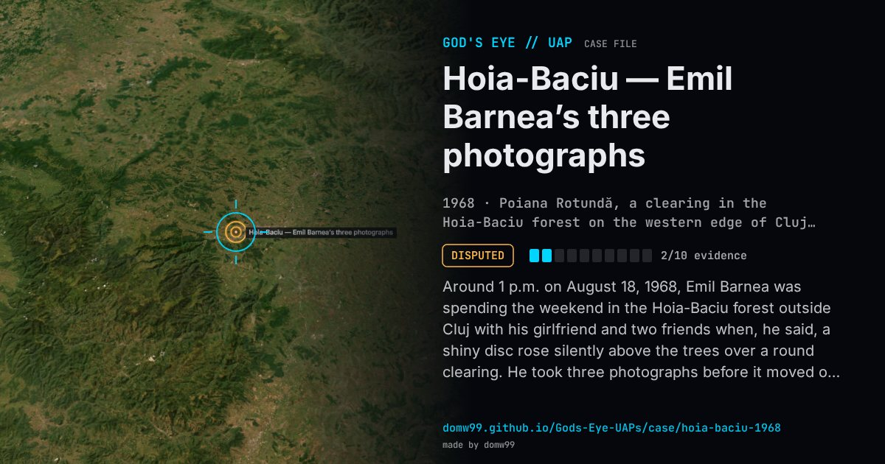

Hoia-Baciu — Emil Barnea’s three photographs

Around 1 p.m. on August 18, 1968, Emil Barnea was spending the weekend in the Hoia-Baciu forest outside Cluj with his girlfriend and two friends when, he said, a shiny disc rose silently above the trees over a round clearing. He took three photographs before it moved off and vanished. The pictures were published and made the forest famous: it is now billed as the “Bermuda Triangle of Transylvania”, with tales of disappearances and twisted trees that have no documented basis, and it has featured in paranormal television series.
Explanation
A Romanian photography expert, Marian Țigănuș, who examined the pictures concluded that the object was more likely a small, plate-like thing about 20 cm across than a large craft at a distance. Others still treat the photographs as genuine.
What was seen
Shape: A shiny, disc-shaped object over the trees
Witnesses: Emil Barnea, a technician working for the army, his girlfriend Zamfira Matea and two friends
Duration: Under two minutes
Sources
- Evenimentul Zilei — the forest at the edge of Cluj, a landing place for UFOs (in Romanian)
- Wikipedia (Romanian) — Pădurea Hoia-Baciu